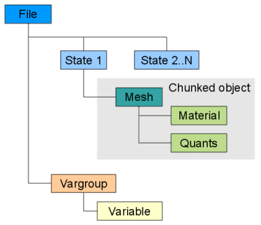
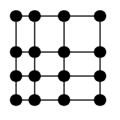
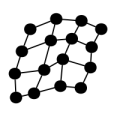
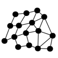
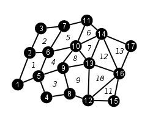
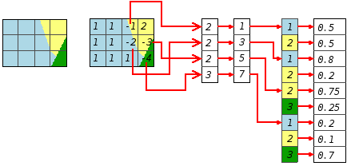

TyphonIO is an in-house library of routines that perform input/output (I/O) of scientific data within application codes. The library is available on HPC platforms and provides C/C++ and Fortran90 APIs to write and read TyphonIO-format files. The TyphonIO files can be dumps for restart or visualization purposes and are completely portable across HPC platforms, that is, a file written on one platform can be read on any other.
TyphonIO is based upon HDF5, a free open-source library from The HDF Group, which provides the portable data infrastructure. The way TyphonIO has been designed means that it would be possible to replace the underlying HDF5 with a successor or alternative, if the need arises, with minimal or no effect on application codes that use it.
Hierarchical Structure
The TyphonIO file format is a hierarchical structure of different objects as shown in figure 1. Each object within the hierarchy corresponds to a simulation or model feature, like those found in scientific or engineering applications. Each object is designed to hold the data and associated metadata for each feature and some of these objects are chunked - the meaning of all objects and the chunking is covered later. Due to the way TyphonIO is designed, it is straightforward to add more objects in future and expand the format to cover more models.

Figure 1. TyphonIO object hierarchyDescriptions of what each object holds are given in the TyphonIO Objects section below.
Chunked Objects
Some of the objects within TyphonIO are chunked. This simply means that the data is represented and stored as discrete parts, chunks, that correspond to an area of the mesh. For example, the common uses of chunks are to store decomposed data from different processes, or hold individual AMR patches.
The number of chunks is set when creating a mesh and then limits of the chunks are then set in turn. The limits of each chunk depend on the type of mesh and each chunk is addressed by a unique index. Once all chunks are set it is possible to create child Material and Quant objects within the Mesh, which then inherit the chunks of that parent Mesh.
Programming Model
The programming model for TyphonIO is straightforward and is based around treating the objects as separate, but related, entities. For each object in the parent-child hierachy there are 3 steps required to perform input/output: Access; Action; Close.
Access:
- The access step simply involves creating or opening an existing file or object.
- When creating objects, all child objects within a parent must be given unique names.
- An object can be opened by name, or by index, where a given index n opens the nth object within the parent. It is possible to open objects speculatively and check the routine return code to find whether an object exists.
- It is only possible to access child objects via their parents, i.e. parents must be accessed first. It is also invalid to access an object more than once.
Action:
- This step is when writing or reading of data occurs. During this step, the ranges, chunks and sections of objects can be set and this is also where the child objects are created / opened and so on.
Close:
- The close step finalizes and closes the object or file. All child objects should be closed before closing the parent.
Additionaly there are a number of routines which do not fit into the above categories. These routines are optional but provide useful functionality when working with TyphonIO objects.
List:
- The list routines list all of a given type of TyphonIO object contained in a parent object, i.e. TIO_List_Meshes list all of the Mesh objects contained in a State.
- These routines may need to be called twice, once to return nobj (the number of objects to return) and again to return the names of said objects. This allows for a list to be created which is large enough to hold the returned names.
Get Dims/Info/Range/nghosts:
- These routines return various properties of a TyphonIO object.
- The object being passed to the routine must be open.
- The TIO_Get_*_Info routines return all the properties used when creating the object.
- The TIO_Get_*_Range routines return the display ranges stored in the given object (if they have been set).
- The TIO_Get_*_nghosts routines return the number of ghosts stored in the given object.
Parallel TyphonIO
TyphonIO also has parallel capabilities, meaning it can provide true parallel I/O from massively parallel application codes, which can provide potential speed-ups compared to traditional I/O methods. TyphonIO's efficient parallel I/O is achieved using the underlying HDF5, which in turn uses MPI-IO. To enable parallel I/O the file access routines need to be passed valid MPI communicator, info and process rank handles.
The parallelism in TyphonIO is achieved by allowing different processes to write or read different chunks of the chunked objects. In order to do this there are two classes of TyphonIO routines: collective and independent. A collective routine must be called by all processes in the given communicator, whereas independent routines can be called at by any number of processes. All access and close routines are collective, as are the routines that define the chunks, but the writing and reading actions on the chunks can be independent or collective. Note that for the routines that set chunk sizes each chunk needs to know the size of every chunk involved. Where possible, I/O should be done collectively, as it allows many optimisations to be made that improve performance.
In practise there is not a great deal of difference between using TyphonIO in parallel to in serial. A process calls its local data to a chunk in the same regardles of whether it is a serial or parallel call. Apart from the global values required in collective operations, TyphonIO has been designed to keep data as local as possible,
the only time this is not the case is for mesh connectivity. The four conventions of parallel TyphonIO can be summarised as:
- 1) Create/open/Close X calls are collective across the processors in the MPI communicator that the file was opened with.
- 2) Set routines (TIO_Set_Mesh_Range, etc) need to be called for every chunk on every chunk. i.e. each chunk needs to know the sizes of all the other chunks. A loop across all processors should be used to perform these calls.
- 3) Write calls are independent.
- 4) Variables are not strictly parallel. Only one processor should write the data as race conditions apply, but see rule #1 for the create/open/close.
Return codes
All TyphonIO routines are functions that return an exit code. The value of the return code can be used to check that the routine performed correctly, or if any errors occured.
File
The file object is the root of all other objects and contains some metadata regarding the file's creation and purpose. An application can create State, Vargroup and Variable objects within the root File.
State
State objects are merely containers that holds all the associated data for the simulation at a particular state, ie. at a particular time or step. All meshes and mesh-based data for the State are stored below it and metadata variables specific to the State can also be added.
Mesh
Mesh object represent a mesh. Multiple meshes can be created within a single State. Data within the mesh and it's Material and Quant objects are centred - cell-centred, nodal-centred, edge (2/3D) or face (3D).
Colinear Mesh Rectangular and assumed connectivity. Just contains axis coordinates.
 Non-Colinear Mesh Logicaly rectangular, but each node has i, j, k coordinates. Still assumed connectivity.
 Unstructured Mesh Explicit connectivity and shapes defined.

Point Mesh No connectivity graph.
Co-ordinate systems can be Cartesian, Spherical polar, cylindrical polar or axisymmetric (2D)
Material
This holds the mesh-wide Material values. Also acts as an index to mixed data for all quantities.
Mixed materials
Quant
Any mesh-wide data that isn't the material can be stored as a Quant.
Variable
Variables are for holding any additional data that doesn't come under the remit of other objects or their metadata. They can be created within any other TyphonIO object, but Variables cannot be created within other Variables.
The value of an existing variable can be updated by simply opening the variable and re-writing it - it is not possible to change the datatype or dimensions of it though.
Vargroup
Vargroups (variable groups) are simple container objects that hold any number of Variables, or further Vargroup objects. Variables do not necessarily have to be contained within Vargroups, but Vargroups are provided so the user can organise larger collections of Variables. Vargroups can be can be created in any of the following objects: File, Vargroup, State, Mesh, Material, Quant.
Using Chunks and Sections
Chunks are indexed 0 to nchunks-1 for C and 1 to nchunks for Fortran90.
TyphonIO API
To use TyphonIO in C/C++ use the following:
#include "typhonIO.h"and in Fortran use:
use typhonIOFortan and C/C++ APIs are kept as identical as possible, with the exception of "_f" being appended to F90 API routines .
C indices start at 0, F90 at 1
TyphonIO Datatypes and parameters
TyphonIO does not allocate passed array types, the user must enusre passed arrays are allocated and large enough to hold the required data. When using list calls this may require the routine to be called twice, once to get nobj, and then again to get the names array once it has been allocated to hold nobj names.
TIO_Open_*routines can be use to perform speculative opens, i.e. attempting to open an object that may or may not exist and then checking the return code to check for success.TyphonIO semantics
Collective routines independent routines TIO_Create_*
TIO_Open_*
TIO_Close_*
TIO_Set_*_Chunk
TIO_Set_*_Range
TIO_Flush
TIO_CheckFile
TIO_IsFileOpen
TIO_Get_LibVersion
TIO_Get_FileVersion
TIO_SizeOf
TIO_Get_TypeClass
TIO_Get_*_Info
TIO_List_*
TIO_Get_*_Range
TIO_Get_nchunks
TIO_Get_*_Chunk
TIO_Set_Section
When compiling you simply need include the path of the TyphonIO include directory.
When linking you will need to link to the TyphonIO library: typhonio for C and typhonio_f & typhonio for F90. You will also need to link in the HDF5 library and any other that may be required (e.g.
-lz -lgpfs -lm).Example compile and link lines are given below:
TIODIR = /typhonIO/parallel H5DIR = /global/hdf5/parallel ftn -I$(TIODIR)/include myprog.f90 -c -o myprog.o ftn myprog.o -L$(TIODIR)/lib -Ltyphonio_f typhonio -L$(H5DIR)/lib -lhdf5 -o myprog.x